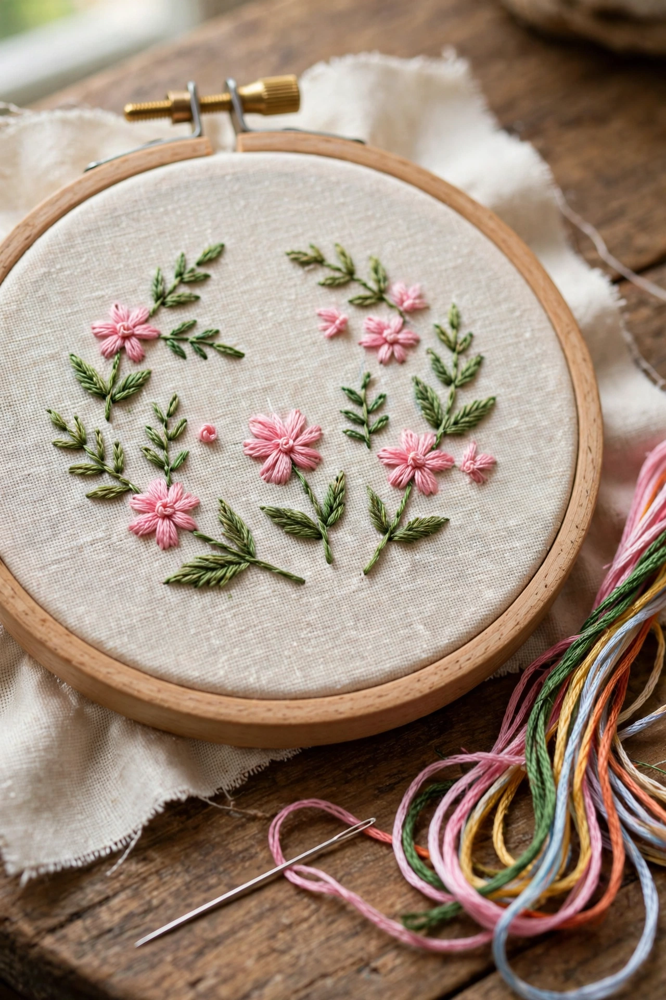

Embroidery Beginner Crafts
Easy Hand Embroidery for Beginners (Free Pattern)

Hand embroidery is slow, calm, and very forgiving. You only need 5 stitches to make something pretty. This guide uses a simple floral hoop you can finish in one evening.
What you need
- 6 inch embroidery hoop
- Cotton fabric, light color
- Embroidery floss, 3 colors
- Embroidery needle, size 7
- Water soluble pen, scissors
- Free pattern, printed below in the steps
The 5 stitches to learn
- Backstitch for stems and outlines. Short, even stitches backward.
- Satin stitch for filling petals. Side by side, flat stitches.
- French knot for flower centers. Wrap thread twice, pull through slowly.
- Lazy daisy for petals. Loop, anchor with a tiny stitch.
- Running stitch for borders and details.
Steps
- Trace the pattern onto fabric with a water soluble pen.
- Put fabric in the hoop, tight like a drum.
- Stitch stems in backstitch, petals in lazy daisy, centers in French knots.
- Fill leaves with satin stitch.
- Rinse the pen marks away, let dry, trim the back.
Beginner tip: Use 3 strands of floss, not all 6. It is easier to control and looks neater. Keep your tension loose, the fabric should stay flat.
Free pattern idea: A simple 3 flower hoop with leaves. Print it at 6 inches, trace, and stitch. Make one for a gift, it takes about an hour once you know the stitches.